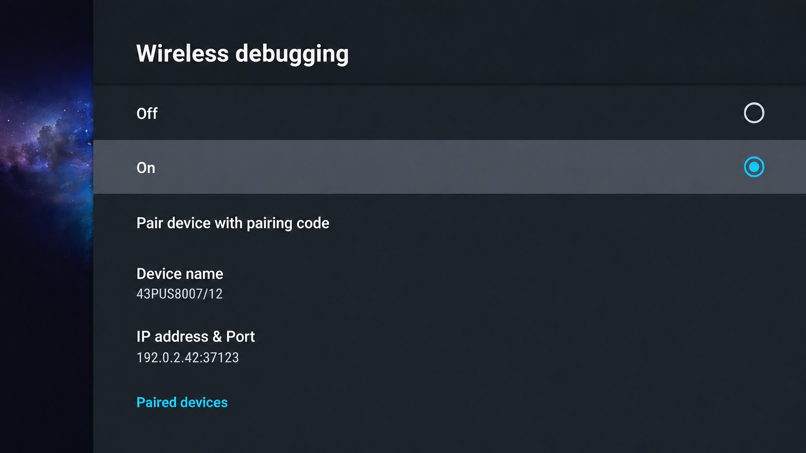
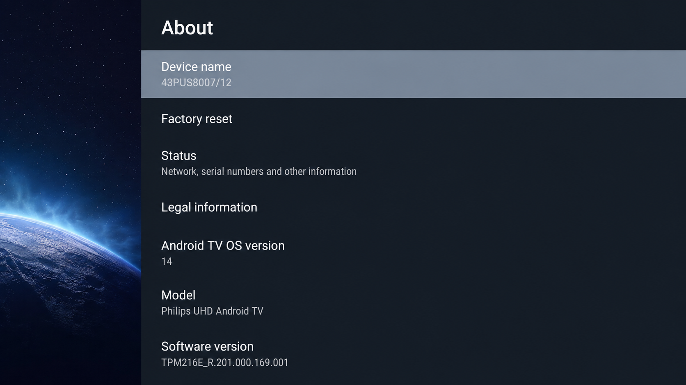
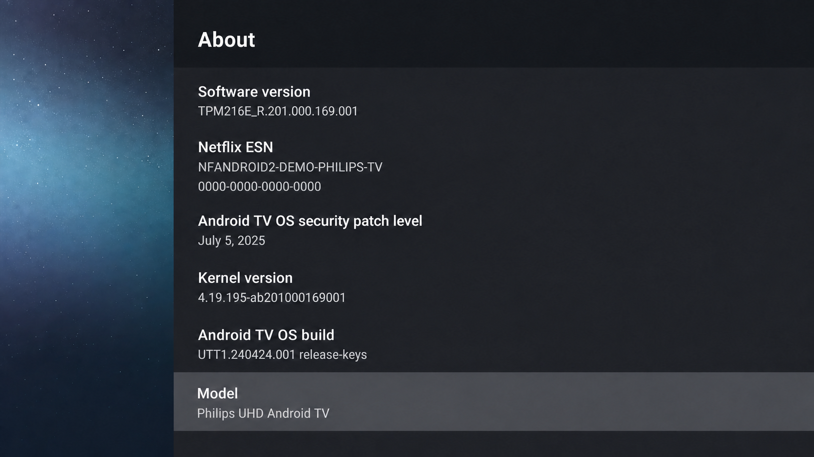
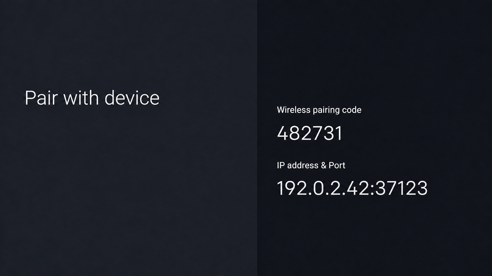

A harmless-looking service may control HDMI inputs, the remote, sound, DRM or another model-specific feature.
ANDROID TV · ADB · PROJECTIVY
Debloat Your Android TV
Inspect what is running, disable only carefully reviewed packages and keep every change reversible. No root, no firmware changes and no universal package list.
Why I made this
My Philips 43PUS8007/12 had become noticeably slow, so I wanted to find out whether the real limit was storage, background software, the launcher or the hardware itself. I inspected it over ADB, measured the system and tested the changes instead of starting from a generic debloat list.
The measurements pointed mainly to its four Cortex-A53 cores and roughly 1.65 GiB of usable memory. Cleaning up selected background packages could reduce unnecessary work, but it could not turn old hardware into a new television. I turned that process into this project so the same investigation can be repeated safely on a different model.
Before you start
- A Windows, macOS or Linux computer
- The TV and computer on the same trusted network
- Developer options and the supported debugging method enabled
- The TV model, Android version and private connection details
Setup
- Enable developer options
Open the TV's About screen and select Build several times. Menu names vary by brand and firmware.
- Enable debugging
Use Wireless debugging where available. Some televisions use a pairing code and a separate connection port.
- Find the TV's address
Open Wireless debugging and note the IP address and port shown. You will use them when ADB connects to the TV.
- Paste the prompt
Fill in the three bracketed fields and give the prompt below to a capable coding agent.

Prompt
Replace the three bracketed device fields before starting.
Loading prompt…Three rules that matter
Install it, open apps and Inputs, and confirm the Home button reaches it before the stock launcher is touched.
Disable one reviewed package at a time, record its enable command and test after every small batch.
Why Projectivy
Projectivy offers a clean, customizable Android TV Home screen with categories and supported input shortcuts. On my TV I used the order Apps → Continue Watching → Inputs.
Install it from Google Play or another trustworthy official route. Its accessibility service is optional and should only be enabled after reading why it is requested. Some customization features require a premium upgrade.
Undo a change
If a test fails, stop and re-enable the newest batch first. Use the package list recorded during that TV's own session.
adb shell pm enable <package>Notes and example screens from my Philips TV
My reference device was a Philips 43PUS8007/12 running Android TV 14 with four Cortex-A53 cores and about 1.65 GiB of usable memory. CPU and memory pressure were the main constraints in this one-device observation; these results are not a promise for other TVs.



Or let your AI agent take it from here
Give this page to your AI agent and ask it to reproduce the same careful, reversible setup for your TV. Let it handle the package-name archaeology—you still make the final call before anything changes.